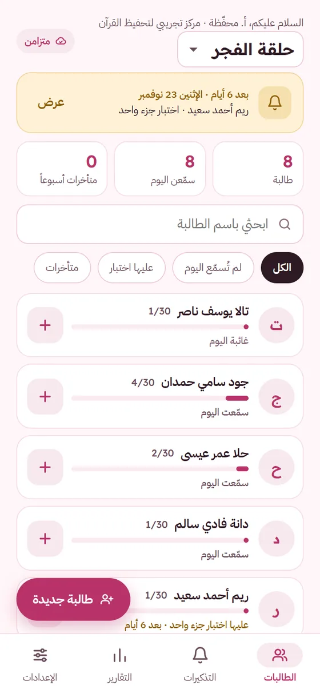
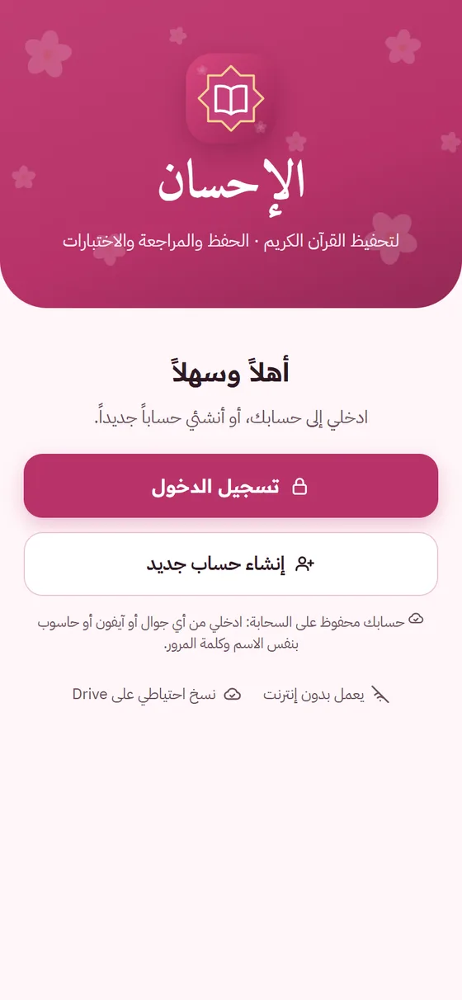
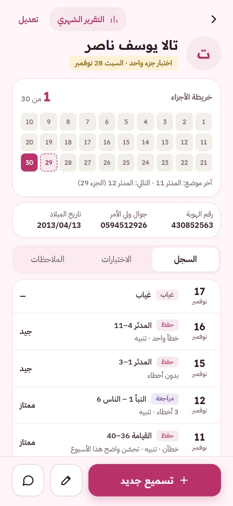
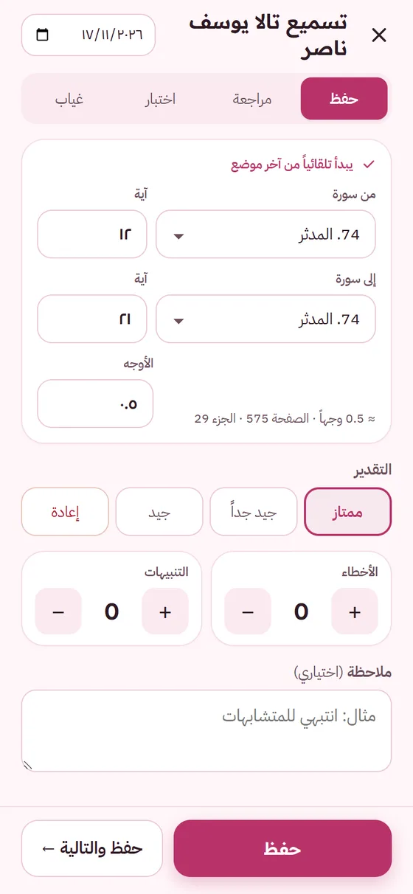
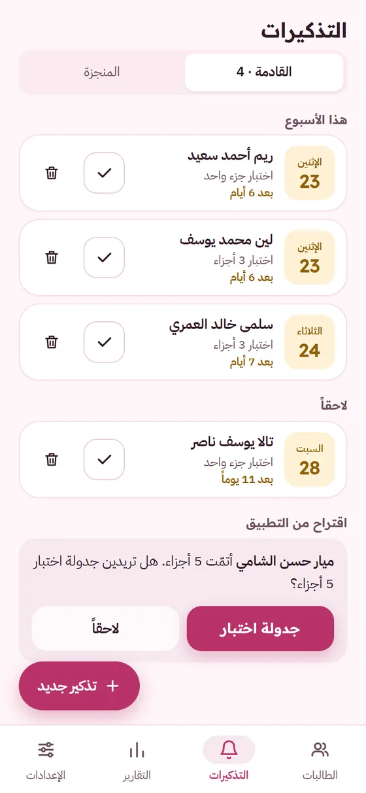
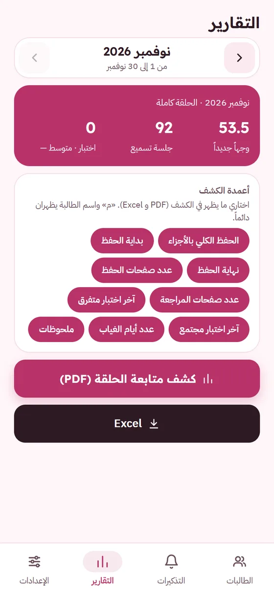
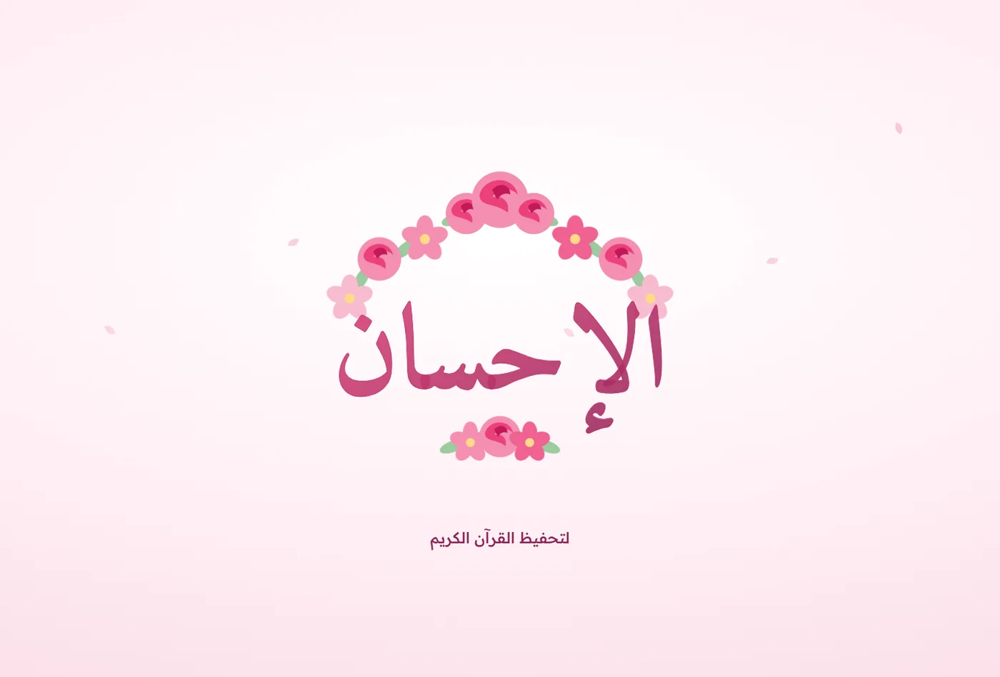

تطبيق لمحفّظات حلقات تحفيظ القرآن الكريم: سجّلي التسميع والمراجعة والاختبارات والغياب، وأخرجي كشف المركز الشهري بضغطة. يعمل بدون إنترنت، ويتزامن بين الجوال والآيفون والحاسوب.


فيه حلقتان و13 طالبة ببيانات وهمية لشهرين: تسميع ومراجعات واختبارات وغياب وتذكيرات. جرّبي كل شيء بحرية.
مصمم لحلقات البنات في المراكز، ويطابق كشوف المتابعة المعتمدة.
سجّلي وأخرجي التقارير والنت مقطوع، وكل شيء يُرفع للسحابة وحده عند الاتصال.
يبدأ تلقائياً من آخر آية، ويحسب الأوجه، ويسأل عند إتمام الجزء.
30 مربعاً لكل طالبة تُظهر ما أتمّته وأين وصلت.
PDF و Excel بنفس أعمدة الكشف المعتمد، وتختارين الأعمدة التي تريدينها.
متفرق ومجتمع، مع إشعار صباح يوم الاختبار واقتراح جدولة تلقائي.
أكثر من حلقة لكل محفّظة، وحساب واحد على كل أجهزتك.





نعم، مجاني بالكامل.
لا. كل محفّظة ترى بياناتها فقط، ومحميّة بقواعد أمان على الخادم.
إذا ربطتِ بريداً: «نسيتِ كلمة المرور؟» في شاشة الدخول يرسل رابط تغييرها. بدون بريد: تواصلي مع مسؤول التطبيق.
لا. ادخلي بنفس الحساب من الجوال الجديد وتجدين كل شيء.
حمّلي الملف الجديد وثبّتيه فوق القديم بدون حذفه، فتبقى بياناتك.